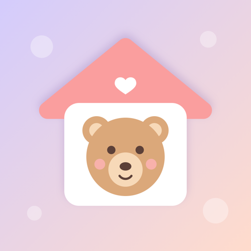
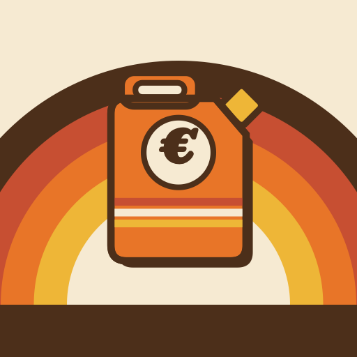

untracklabs conçoit des applications iPhone et Android pour toutes sortes de besoins : utilitaires, jeux, outils du quotidien ou du métier. Pensées avec l'IA comme copilote, finies avec soin, et toujours sans pub, sans compte, sans pistage.
~/untracklabs $ untrack --audit › analyse de l'app en cours… ✓ publicités ............ 0 ✓ traceurs .............. 0 ✓ comptes obligatoires .. 0 ✓ données revendues ..... 0 ✓ vos données ........... sur votre téléphone ~/untracklabs $
// sorties du labo
Natives sur iPhone et Android, rapides, sobres, et qui ne parlent qu'aux services dont elles ont vraiment besoin.

Pour les parents employeurs et les assistantes maternelles : contrat, suivi mensuel, récapitulatif Pajemploi, congés et carnet de liaison. Échanges chiffrés de bout en bout.

Le plein le moins cher autour de vous, avec les prix officiels de toutes les stations de France et le coût réel du trajet.
Un jeu, un outil, une idée qui vous manque au quotidien : elle pourrait bien être la prochaine à sortir du labo.
// ce qui peut sortir du labo
Pas de spécialité imposée : le labo suit les besoins réels. Un petit agacement du quotidien, une démarche trop compliquée, une envie de jouer, et une app peut en naître.
Des jeux malins et soignés, sans pub entre deux parties ni achats forcés.
Les petits outils qui font gagner du temps, de l'argent ou des nerfs.
Organisation, démarches, budget : simplifier ce qui devrait déjà l'être.
Se déplacer mieux et moins cher, avec des données ouvertes et fiables.
Des apps taillées pour une profession, sans usine à gaz ni abonnement.
Des idées qui tirent parti de l'IA, en gardant vos données chez vous.
// principes
Aucune publicité, ni bannière, ni vidéo imposée.
Pas d'outil de mesure d'audience ni de SDK publicitaire.
Vous ouvrez l'app, elle marche. Pas d'inscription.
Vos données restent sur votre téléphone.
// contact
Une remarque sur une app, un bug, ou un besoin qui mériterait sa propre application : écrivez au labo.
contact@untracklabs.org